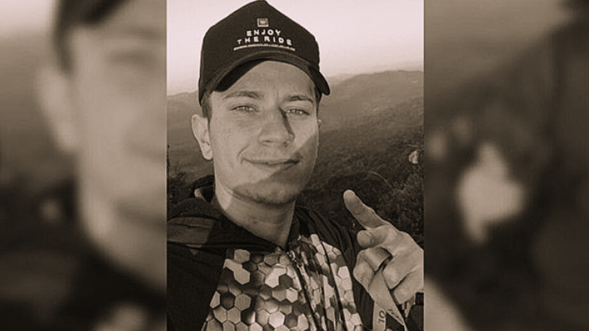

Jovem morre após explosão de churrasqueira em SC; vítima ficou um mês internado
Qui. 30 de Outubro de 2025
Acidente aconteceu em Massaranduba. Filhos gêmeos da vítima nasceram durante período de internação, mas ele não os conheceu.
Um jovem de 24 anos morreu nessa quarta-feira (29) após ficar um mês internado por causa de uma explosão de churrasqueira em Massaranduba, no Norte de Santa Catarina. Gabriel Henrique Peixoto Pereira sofreu queimaduras de segundo grau e não resistiu.
O acidente aconteceu em 20 de setembro, no bairro Patrimônio. Gabriel tentou acender uma churrasqueira com álcool, mas o equipamento explodiu e o fogo atingiu o jovem. Os bombeiros voluntários atenderam a ocorrência e ele foi levado ao Pronto Atendimento do município.
O velório de Gabriel acontece nesta quinta-feira (30), na Capela Mortuária da Igreja Nossa Senhora Auxiliadora, em Massaranduba. A missa será às 15h, seguida do sepultamento no cemitério municipal.
Nas redes sociais, amigos e familiares prestaram homenagens.
“Eu vou te amar pra todo sempre, meu eterno esposo. A gente tinha tantos planos ainda para viver, para realizarmos juntos, às vezes a gente não entende os planos de Deus agora, mas no futuro a gente vai entender (…) Cuida de mim e do Miguel aí de cima, o João e você sempre estarão em meu coração”, escreveu a esposa.
"Gabriel era um menino de ouro”, disse uma pessoa próxima.
Jovem não conheceu filhos gêmeos Gabriel ficou internado desde o dia do acidente. Em 18 de outubro, sua esposa deu à luz gêmeos prematuros. João Gabriel, um dos bebês, morreu um dia depois. Miguel, o outro filho, continua internado na UTI.
De acordo com familiares, Gabriel não teve a chance de conhecer os filhos.